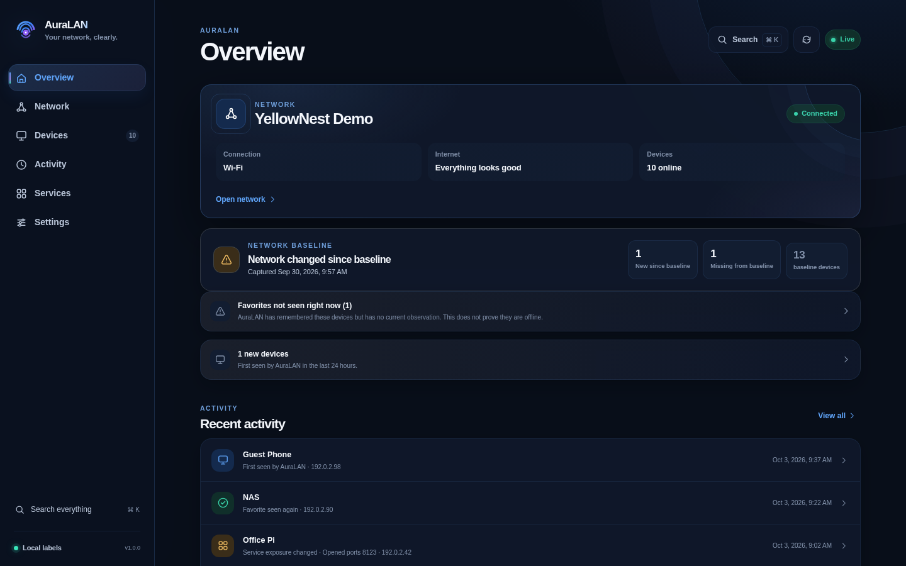
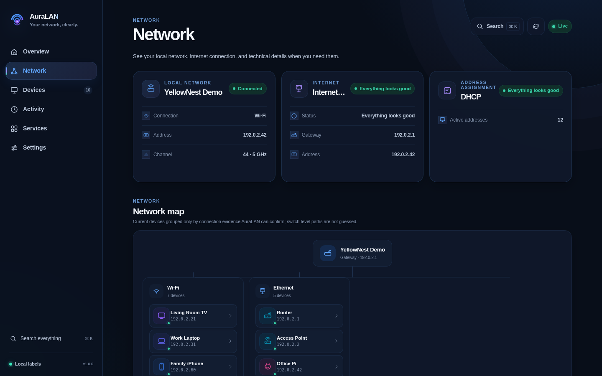
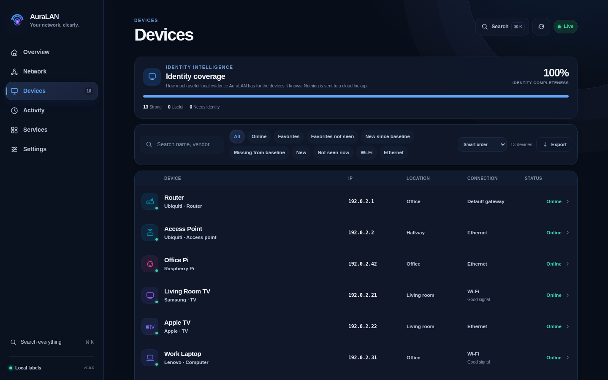
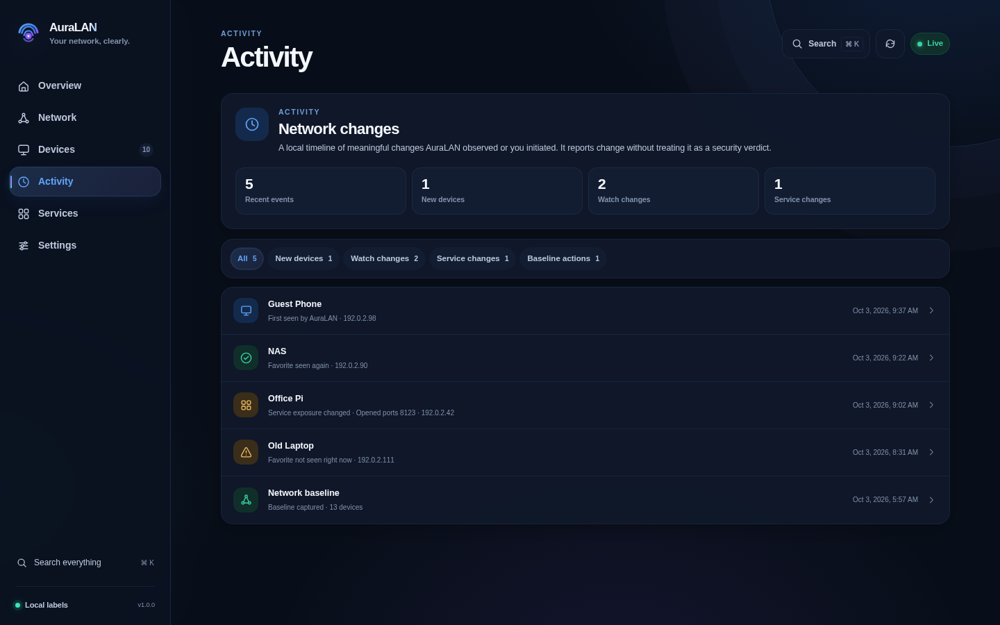
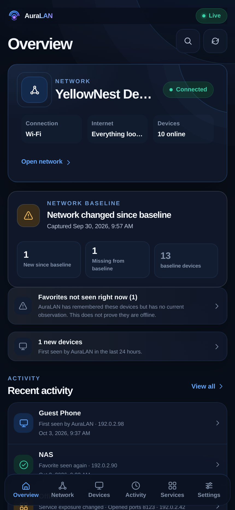

Human-readable inventory
Combine neighbours, DHCP, Wi-Fi, mDNS, DNS-SD, NetBIOS, SSDP, Pi-hole and offline OUI evidence into conservative device identities.
AuraLAN turns local network evidence into a clean, human-readable view of your LAN — without an account, telemetry, cloud lookups or remote assets.

ACTUAL INTERFACE
Every screenshot below is captured from the real AuraLAN frontend using a synthetic LAN. The devices, names, MAC addresses and documentation-range IP addresses are deliberately fictional.




WHAT AURALAN DOES
Use the information your Linux host can already observe and turn it into something understandable.
Combine neighbours, DHCP, Wi-Fi, mDNS, DNS-SD, NetBIOS, SSDP, Pi-hole and offline OUI evidence into conservative device identities.
See what changed in the last 24 hours and seven days with aggregate local activity, actionable counts and a privacy-preserving trend view.
See observed and online device trends in bounded 15-minute aggregate samples, with no device identity stored in the history table.
Bring missing favorites, baseline differences, identity gaps, service health and recent changes into one local “Worth a look” queue with direct links to the evidence.
See new devices, favorite watch changes, baseline actions and Service Exposure changes in one local timeline.
Capture the devices you expect and see what changed later — without pretending every change is a threat.
Understand which local evidence supports each identity and which devices still need a better name.
Check a small fixed set of common TCP ports on a known device and keep a bounded local change history.
Use aggregate REST data and optional reliable webhooks while keeping identifiers private by default.
LOCAL BY DESIGN
AuraLAN has no account system, telemetry, third-party MAC lookup API, remote fonts or CDN runtime dependencies.
Read the privacy model →Read local Linux and LAN evidence.
Build conservative identities from multiple sources.
Keep inventory, activity and user-owned metadata in local SQLite state.
Show the evidence instead of inventing certainty.
QUICK START
The official AMD64/ARM64 image keeps AuraLAN self-contained while host networking preserves real LAN visibility. Raspberry Pi 4/5 with a 64-bit OS uses the same image.
git clone https://github.com/YellowNest/AuraLAN.git
cd AuraLAN
docker compose up -dOPEN SOURCE MEANS OPEN
Contributions are welcome — from documentation and device signatures to tests, compatibility work and new local discovery evidence.